Υβριδική Αρχιτεκτονική: Το Καλύτερο και από τους Δύο Κόσμους με Supabase και Spring Boot
Δημοσιεύτηκε 14 January 2026
Όπως να μην επιλέγετε μεταξύ της απλότητας του Supabase και της δύναμης του Spring Boot, γιατί να μην τα συνδυάσετε δύο; Ανακαλύψτε μια υβριδική αρχιτεκτονική που αξιοποιεί το καλύτερο από κάθε τεχνολογία.
- τοκ
-
[]
- Η ψευδής δίλημμα της σύγχρονης αρχιτεκτονικής
- αρχιτεκτονική όραση
- Αρχές Σχεδίασης
- Οργάνωση των ροών
- Πίνακας αποφάσεων
- Παραδείγματα αρχιτεκτονικής ανά τύπο έργου
- Στρατηγική προοδευτικής μετανάστευσης
- Κόστη και λειτουργικά ζητήματα
- Συμπέρασμα: Η τέλεια ισορροπία
- Για να πάτε περαιτέρω
- Προοπτικές εξέλιξης
- Αρχιτεκτονικές μαρτυρίες
- Σύνθεση: Ένας σύγχρονο αρχιτεκτονικό παράδειγμα
- συμπέρασμα τελικό
Η ψευδής δίλημμα της σύγχρονης αρχιτεκτονικής
Όταν χτίζουμε μια σύγχρονη εφαρμογή με ένα στατικό frontend, συχνά βρισκεόμαστε αντιμέτωποι με μια δυαδική επιλογή :
-
Να βάλουμε όλα σε μια λύση Backend-as-a-Service(Supabase, Firebase) - απλή αλλά περιορισμένη
-
Κατασκευή ενός πλήρους backend(Spring Boot, Node.js) - ισχυρό αλλά περίπλοκο
Αυτή η επιλογή είναι ένα ψεύτικο δίλημμα. Η υβριδική αρχιτεκτονική προτείνει μια τρίτη διαδρομή: χρησιμοποιείτε κάθε τεχνολογία εκεί όπου ξεχωρίζει.
αρχιτεκτονική όραση
Η παραδοσιακή αρχιτεκτονική : Μονολιθική
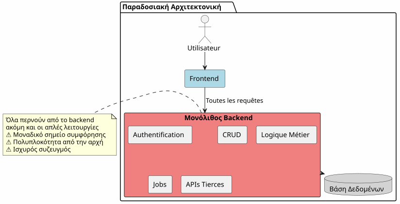
Στην προσέγγιση αυτή, ακόμα και οι πιο απλές λειτουργίες (ανάγνωση ενός άρθρου, δημιουργία ενός σχολίου) πρέπει να περάσουν μέσω του back‑end σας. Πληρώνετε το κόστος της πολυπλοκότητας από την πρώτη μέρα.
Η Αρχιτεκτονική BaaS : Κάθε εκπρόσωπος
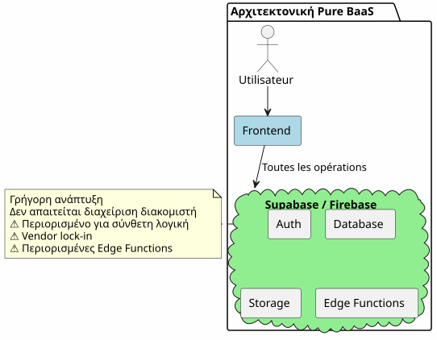
Αντίθετα, να δελεγώ όλα σε ένα BaaS είναι ελκυστικό στην αρχή, αλλά γρήγορα εμφανίζει τα όρια του όταν η επιχειρηματική λογική γίνεται πιο περίπλοκο.
Το υβριδικό αρχιτεκτονικό: Διαχωρισμός ευθυνών
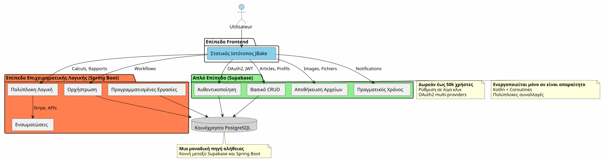
Η υβριδική αρχιτεκτονική χωρίζει σαφώς τις ευθύνες ανάλογα με τη πολυπλοκότητα και τη φύση των λειτουργιών.
Αρχές Σχεδίασης
Αρχή 1: Ξεκινήστε απλά, εξελίξτε νοημοσύνη
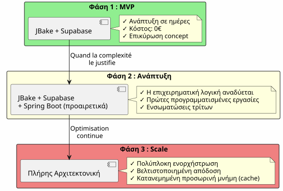
Μην δημιουργείτε Spring Boot αν δεν το χρειάζεστε.Ξεκινήστε με το Supabase, προσθέστε το Spring Boot όταν η πολυπλοκότητα το δικαιολογεί.
Αρχή 2 : Διαχωρισμός κατά φύση λειτουργίας

Αρχή 3: Μια μόνο πηγή αλήθειας
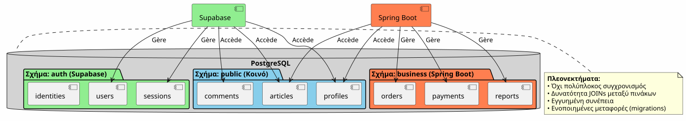
Χρησιμοποιώντας την ίδια παρουσία του PostgreSQL, το Supabase και το Spring Boot εργάζονται πάνω στα ίδια δεδομένα χωρίς πολύπλοκη συγχρονισμό.
Οργάνωση των ροών
Ροή 1 : Κεντρική Πιστοποίηση
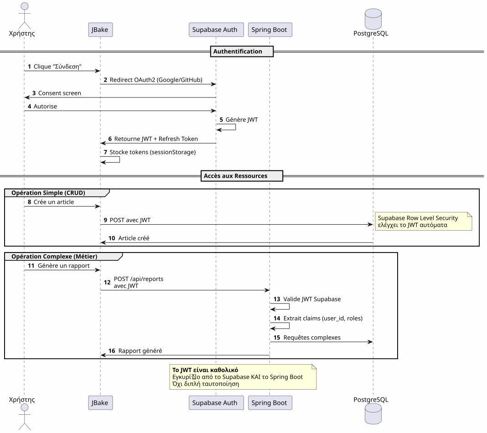
Σημαντικό σημείο: Μια μόνο διαδικασία αυθεντικοποίησης, ένα μόνο JWT, χρησιμοποιήσιμο παντού.
Flux 2 : Ορχηστράτευση μιας σύνθετης επιχειρησιακής διαδικασίας
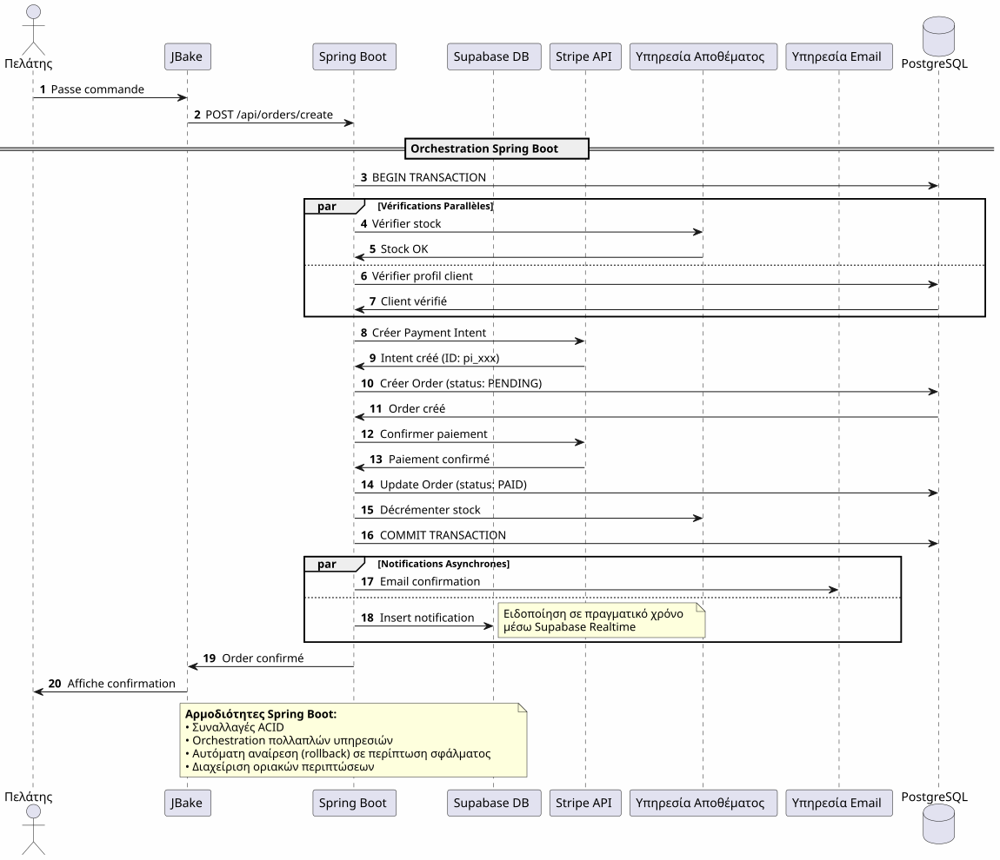
Το Spring Boot φέρνει: Αξιόπιστη οργάνωση σύνθετων διεργασιών που ενσωματώνουν πολλά συστήματα με εγγύηση συναλλαγών
Flux 3 : Εργασίες Προγραμματισμένες και Συγκροτικές
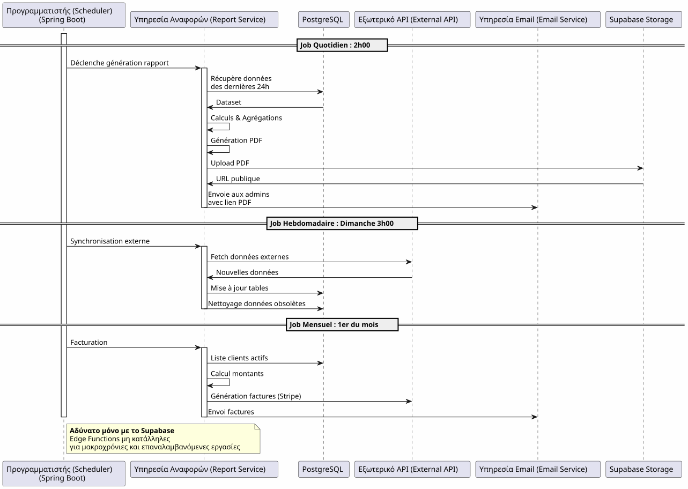
Τι προσφέρει το Spring BootΑξιόπιστα προγραμματισμένες εργασίες με διαχείριση κατάστασης, αυτόματα επαναλήψεις και εγγυημένη εκτέλεση.
Πίνακας αποφάσεων
Πότε να χρησιμοποιήσετε το Supabase;

Πότε να χρησιμοποιήσετε το Spring Boot ;

Παραδείγματα αρχιτεκτονικής ανά τύπο έργου
Blog / Πορτφόλιο
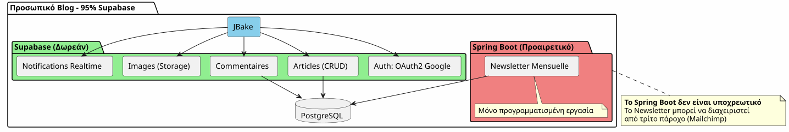
Απόφαση: 100% Supabase είναι περισσότερο από αρκετό.
Εφαρμογή SaaS
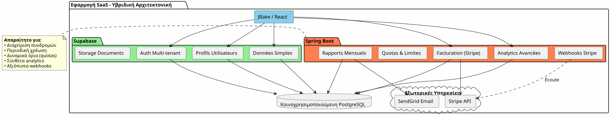
απόφαση: Υβριδική αρχιτεκτονική απαιτείται. Supabase για το βασικό, Spring Boot για την κρίσιμη ενότητα (πληρωμές, τιμολόγηση).
ε-εμπόριο
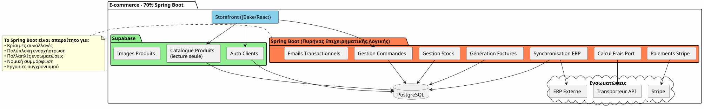
απόφαση: Spring Boot απαραίτητο. Supabase για auth και κατάλογο μόνο.
Στρατηγική προοδευτικής μετανάστευσης
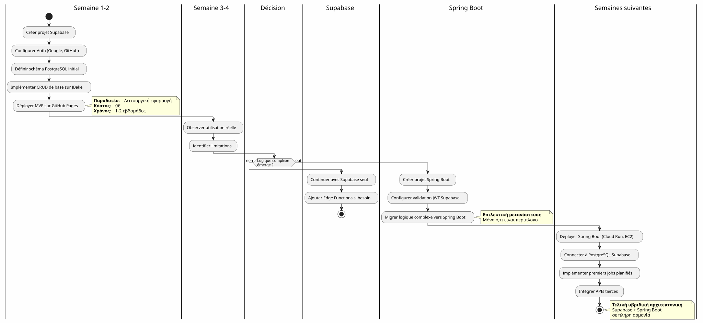
Κόστη και λειτουργικά ζητήματα
Δομή κόστους
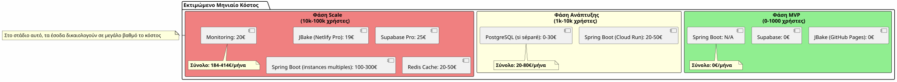
Λειτουργικές ευθύνες
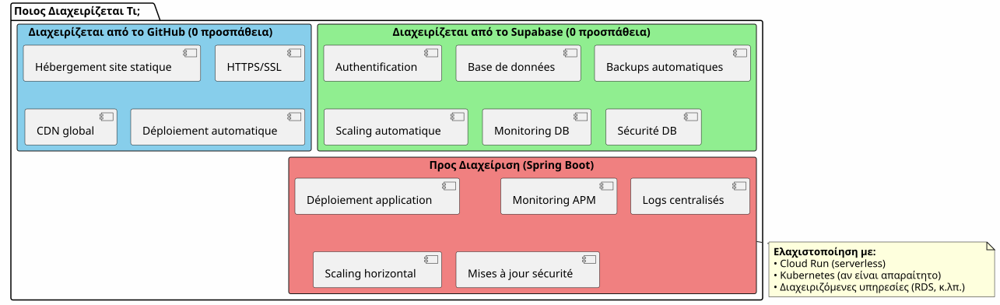
Συμπέρασμα: Η τέλεια ισορροπία
Η υβριδική αρχιτεκτονική Supabase + Spring Boot δεν είναι ένα συμβιβασμός, είναι μιασυνεργεια.
Οι αρχές που πρέπει να θυμάσαι

Πότε να επιλέξετε αυτήν την αρχιτεκτονική;
✅ Αυτή η αρχιτεκτονική είναι ιδανική αν:
-
Θέλετε να ξεκινήσετε γρήγορα (MVP σε ημέρες, όχι σε μήνες)
-
Προσπαθείς μια αύξηση της επιχειρηματικής πολυπλοκότητας
-
Θέλετε να ελαχιστοποιήσετε το αρχικό κόστος
-
Αρέσει σας το PostgreSQL και θέλετε μια μοναδική πηγή αλήθειας
-
Τιμείτε το Kotlin και τις κοroutines για τον κώδικα επιχειρηματικής λογικής
-
Θέλετε να αποφύγετε την ολοκληρωτή εξάρτηση από τον προμηθευτή
❌ Αυτή η αρχιτεκτονική ΔΕΝ είναι κατάλληλη αν :
-
Το πρόект σου είναι απλό και θα μείνει έτσι (ατομικό blog → 100% Supabase αρκεί)
-
Έχετε ήδη μια καθιερωμένη backend stack που τη διαχειρίζεστε.
-
Προτιμάτε έναν παραδοσιακό μονόλιθο
-
Χρειάζεστε .NET, Python ή άλλη γλώσσα για το backend
Τελική σύνοψη
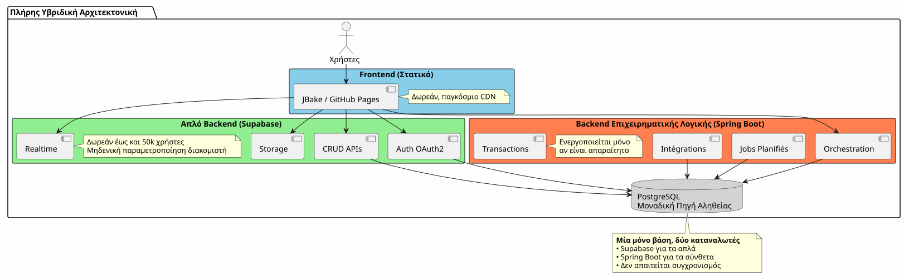
Το καλύτερο των δύο κόσμων
Αυτή η αρχιτεκτονική σας δίνει:
🚀 Η ταχύτητα του Supabase
-
Αρχή σε ώρες, όχι σε εβδομάδες
-
Πιστοποίηση OAuth2 σε λίγα κλικ
-
API REST που δημιουργούνται αυτόματα
-
Μηδενική ρύθμιση υπηρεσίας
💪 Η Ισχύς του Spring Boot
-
Kotlin και Coroutines για αισθητικό ασύγχρονο κώδικα
-
Ορχηστράνισμα πολύπλοκων διαδικασιών επιχείρησης
-
Αξιόπιστες προγραμματισμένες εργασίες
-
εγγυημένες ACID ενεργασίες
-
Πλήρες οικοσύστημα Spring
💰 Η προοδευτική οικονομία
-
0€ για να ξεκινήσετε και να επιβεβαιώσετε
-
Κόστη πουacolουθούν την ανάπτυξη
-
Μη πρόωρο υπερ-μηχανισμός
🎯 Η αρχιτεκτονική ευελιξία
-
διαδοχική μεταφορά χωρίς ανασχεδιασμό
-
Προσθήκη Spring Boot μόνο αν είναι απαραίτητη
-
Χωρίς vendor lock-in συνόλικο
-
Εξελικτική αρχιτεκτονική
Για να πάτε περαιτέρω
Τεχνικά πόροι
Τεκμηρίωση Supabase :
Τεκμηρίωση Spring Boot :
Πρόσθετα Άρθρα :
-
Ασφάλιση των APIs με JWT
-
Βελτιστοποίηση απόδοσης PostgreSQL
-
Πρότυπα προοδευτικής μετανάστευσης
-
Διαχείρηση σφαλμάτων σε διανεμημένη αρχιτεκτονική
Αληθινείς περιπτώσεις χρήσης
Αυτή η υβριδική αρχιτεκτονική χρησιμοποιείται με επιτυχία σε :
-
SaaS B2B: Επαλήθευση Supabase, χρέωση Spring Boot
-
αγοράστρες: Κατάλογος Supabase, συναλλαγές Spring Boot
-
Πλατφόρμες περιεχομένουΆρθρα Supabase, αναλυτικά Spring Boot
-
Εσωτερικά εργαλεία: CRUD Supabase, εργασιών Spring Boot
Λίστα ελέγχου εκκίνησης
Φάση 1 - θεμελιώσεις (εβδομάδα 1)
-
Δημιουργία λογαριασμός - [ ] Ρύθμιση έργου PostgreSQL - [ ] Ενεργοποίηση Auth (Google, GitHub) - [ ] Ορίζει το αρχικό σχήμα - [ ] Ρυθμίστε Row Level Security - [ ] Δοκιμή API από JBake
Φάση 2 - MVP (Εβδομάδα 2-3)
-
Υλοποίηση κύριων σελίδων - [ ] Ενσωμάτωση αυθεντικοποίησης OAuth2 - [ ] Δημιουργία φορμών CRUD - [ ] Ρυθμίστε το Storage για αρχεία - [ ] Ανάπτυξη στο GitHub Pages - [ ] Δοκιμή υπό πραγματικές συνθήκες
Φάση 3 - Εξέλιξη (Κατά τις ανάγκες)
-
Ανιχνεύστε τις ανάγκες της πολύπλοκής λογικής - [ ] Δημιουργήστε έργο Spring Boot αν χρειάζεται - [ ] Ρύθμιση επαλήθευσης JWT Supabase - [ ] Σύνδεση με PostgreSQL Supabase - [ ] Μεταφορά πλοκόδηλων λειτουργιών - [ ] Υλοποίηση προγραμματισμένων εργασιών - [ ] Αναπτύξτε Spring Boot (Cloud Run, κ.λπ.)
Αντι-πατέρνα προς αποφυγή
❌ Μην κάνετε:
-
Αντιγραφή των δεδομένων μεταξύ Supabase και Spring Boot
-
Δημιούργησε δύο ξεχωριστές βάσεις δεδομένων PostgreSQL
-
Κωδικοποίησε τον έλεγχο ταυτότητας σας
-
Χρησιμοποιήστε Spring Boot για απλό CRUD
-
Υπεραρχιτεκτονίζοντας από την αρχή
-
Αγνοήστε το Row Level Security του Supabase
✅ Κάνε αντίστοιχα :
-
Κοινοποίηση μίας μόνο βάσης PostgreSQL
-
Αφήστε το Supabase να διαχειριστεί τον έλεγχο ταυτότητας
-
Χρησιμοποιήστε Spring Boot μόνο για την πολυπλοκότητα
-
Αρχίστε απλά, προχωράστε σταδιακά
-
Αξιοποιήστε τα πλεονεκτήματα κάθε τεχνολογίας
-
Ασφαλίστε με RLS στο επίπεδο της βάσης δεδομένων
Προοπτικές εξέλιξης
Προσθήκη Νέων Δυνατοτήτων
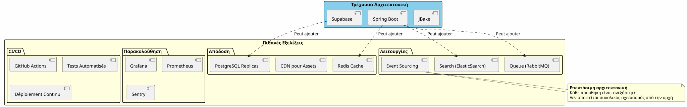
Κλιμάκωση Οριζόντια
Όταν η εφαρμογή σας αυξάνεται, η υβριδική αρχιτεκτονική κλίμακα φυσικά:
Supabase :
-
Κλιμακώνεται αυτόματα έως εκατομμύρια λειτουργίες
-
Read replicas για απόδοση ανάγνωσης
-
Ανάκτηση ανά στιγμή χρόνου για ασφάλεια
Spring Boot :
-
Πολλαπλές περιπτώσεις πίσω από load balancer
-
Το Stateless design διευκολύνει την οριζόντια κλιμάκωση
-
Kubernetes για ορχηστрым αν χρειάζεται
PostgreSQL :
-
διαμερισμός για μεγάλα πίνακες
-
Συγκέντρωση συνδέσεων (PgBouncer)
-
Sharding αν είναι πραγματικά απαραίτητο (σπάνιο)
Αρχιτεκτονικές μαρτυρίες
Startup SaaS (50k χρήστες)
_ Έχουμε ξεκινήσει 100% Supabase. Σε 5.000 χρήστες, προσθέσαμε Spring Boot μόνο για τη χρέωση Stripe και τα μηνιαία αναφορές. Ένας χρόνος αργότερα, το 80% των λειτουργιών μας περνούν ακόμα μέσω Supabase. Το Spring Boot διαχειρίζεται μόνο το κρίσιμο μέρος. Αυτή η διαχωρισή μας επέτρεψε να κλιμακώσουμε χωρίς ανακατασκευή. _
Πλατφόρμα E-learning (10k χρήστες)
_ Η ταυτοποίηση OAuth2 του Supabase μας έσωσε τρεις εβδομάδες ανάπτυξης. Οι αυτόματα γεννημένες API διαχειρίζονται τον πλήρη κατάλογο μαθημάτων μας. Το Spring Boot χρησιμοποιείται μόνο για τα πιστοποιητικά PDF και τα email προόδου. Απλό, συντηρήσιμο, κλιμάκον αρχιτεκτονικό. _
Αγορά B2B (3k χρήστες)
_ Spring Boot διαχειρίζεται τις συναλλαγές μεταξύ αγοραστών και πωλητών (κριτικό). Ο Supabase διαχειρίζεται όλο το υπόλοιπο: προφίλ, μηνυμεία σε πραγματικό χρόνο, εγγράφα. Το γεγονός ότι μοιράζονται την ίδια βάση PostgreSQL μας αποφεύγει κάθε σύνθετη συγχρονισμός. Η καλύτερη αρχιτεκτονική επιλογή που κάναμε. _
Σύνθεση: Ένας σύγχρονο αρχιτεκτονικό παράδειγμα
Η υβριδική αρχιτεκτονική Supabase + Spring Boot αποτελεί ένα νέο παράδειγμα :η αρχιτεκτονική ειδικότητα.
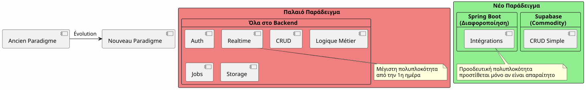
Η βασική αρχή :Μην χτίζετε αυτό που υπάρχει ήδη ως υπηρεσία. Εστιάστε σε αυτό που διακρίνει την εφαρμογή σας.
Ο κανόνας 80/20
στις περισσότερες εφαρμογές:
-
80% των λειτουργιώνείναι του τυπικού CRUD → Supabase
-
20% των λειτουργιώναπαιτούν επιχειρηματική λογική → Spring Boot
Αυτό το φυσικό κανόνι δικαιολογεί την υβριδική αρχιτεκτονική.
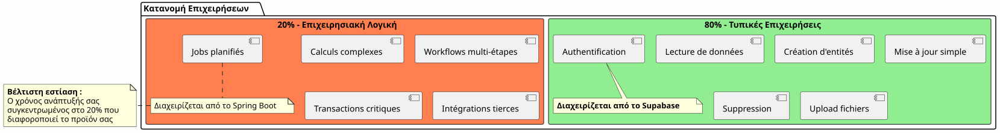
συμπέρασμα τελικό
Η υβριδική αρχιτεκτονική δεν είναι ένα τεχνικό σύμφωνο, είναι μιαστρατηγική απόφαση.
Σας επιτρέπει να:
-
✅ Ξεκινήστε γρήγορα με ένα λειτουργικό MVP
-
✅ Επαλήθευση της αγοράς σας χωρίς βαρύ επενδυτικό
-
✅ Εξελίσσαι διαδοχικά όταν η πολυπλοκαιτητα απαιτεί αυτό
-
Ελέγξτε τα κόστη σας σε κάθε βήμα
-
✅ Εξυπηρετήστε το καλύτερο από κάθε τεχνολογία
-
✅ Αποφύγετε την πρόωρη υπερμηχανολογία
-
✅ Διατηρήστε την ευελιξία για το μέλλον
Συμβολίζει :
-
🎯ΠραγματισμόςΚάθε τεχνολογία όπου διακρίζεται
-
🚀ταχύτητα: ελάχιστος χρόνος εισαγωγής στην αγορά
-
💰Οικονομία: κόSTOI ευθυγραμμισμένοι με την αξία
-
🔮εκτασιμότητα: Αρχιτεκτονική που αυξάνει μαζί σας
-
🛡️ανθεκτικότητα: Υπηρεσίες δοκιμασμένες και αξιόπιστες
Το επόμενο βήμα σας
Αν αυτή η αρχιτεκτονική σας μιλάει, εδώ είναι το σημείο από το οποίο να ξεκινήσετε :
-
Δημιουργήστε έναν λογαριασμό Supabase(δωρεάν)
-
Καθορίστε το ελαχιστό σχήμα δεδομένων σας
-
Ρυθμίστε την πιστοποίηση OAuth2
-
Δημιουργήστε την πρώτη σελίδα JBake που χρησιμοποιεί το API
-
Αναπτύξτε στην GitHub Pages
Θα έχετε ένα λειτουργικό MVP σελίγες ημέρες.
Spring Boot θα έρθει φυσιολογικά όταν το χρειαστείτε. Πριν από τότε.
Η υβριδική αρχιτεκτονική είναι η τέχνη να χτίζει ακριβώς αυτό που χρειάζεται, όταν το χρειάζεται.
Καλή εξέλιξη! 🚀
Μοιραστείτε αυτό το άρθρο αν πιστεύετε ότι μπορεί να βοηθήσει άλλους προγραμματιστές να κάνουν τις σωστές αρχιτεκτονικές επιλογές.